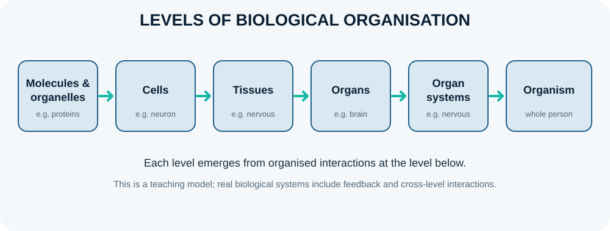

Levels of structural organisation and anatomical variation

Human structure is organised across nested levels: chemical components form molecules, molecules participate in organelles, organelles make up cells, cells form tissues, tissues combine into organs, and organs work together in systems within the whole organism. Anatomy focuses on structure at each level, while physiology studies function and the interaction between levels. This hierarchy is a useful learning model, though living systems are interconnected rather than simple one-way stacks.
Learning objectives
- Sequence biological organisation from molecules and organelles to the whole organism.
- Distinguish cells, tissues, organs and organ systems using examples.
- Explain how structure and function emerge through organisation and interaction across levels.
- Relate homeostasis to coordinated activity among tissues and organ systems.
High-yield study points
- The chemical level includes atoms, ions, water, proteins, lipids, carbohydrates and nucleic acids.
- The cellular level includes specialised cells whose shapes and internal machinery support particular functions.
- The four broad tissue classes are epithelial, connective, muscle and nervous tissue; organs usually contain more than one tissue class.
- An organ system is a group of organs that coordinate functions, such as circulation, gas exchange, digestion, movement or regulation.
- Structure and function influence each other: thin alveolar walls support diffusion, while thick collagen-rich tendons transmit force.
- Normal anatomical variation includes differences in size, branching patterns, accessory muscles, organ position and vascular routes; variation is not automatically disease.
- Age, pregnancy, body habitus, posture, breathing and prior surgery can alter the observed position or appearance of structures.
- A reliable description separates normal variants from congenital anomalies, acquired disease and measurement artefacts.
Clinical connection
Recognising normal variation reduces the risk of mistaking a common variant for pathology and helps clinicians interpret imaging and plan procedures safely.
Check your understanding
- What level is formed by groups of similar cells and their extracellular material working together?
Reveal answer
Tissue.
- Is the heart a tissue, organ or organ system?
Reveal answer
An organ, because several tissue types work together to perform coordinated functions.
- Why is the organism more than a simple sum of isolated organs?
Reveal answer
Organs interact through neural, hormonal, circulatory and other mechanisms to maintain integrated function and homeostasis.
Further reading and systems thinking
OpenStax, Anatomy and Physiology 2e — levels of structural organisation and body systems. A physiological outcome usually emerges from interaction across levels: a protein changes cell behaviour, cells form tissues, tissues form organs and organs coordinate within systems. The levels are a learning framework, not isolated compartments.
From molecules to the whole organism
The levels of organisation are nested, but they are not merely a list to memorise. Each level has properties that emerge from interactions at lower levels: a cell's behaviour depends on its molecules and organelles, while tissue function depends on how cells are organised with extracellular matrix, blood supply and innervation.
- Chemical level: atoms and molecules, including water, ions, proteins, lipids, carbohydrates and nucleic acids.
- Cellular level: the cell is the basic living unit; membranes regulate exchange, organelles specialise tasks, and gene expression supports cell identity.
- Tissue level: groups of cells and their extracellular matrix cooperate in epithelial, connective, muscle or nervous tissue.
- Organ level: at least two tissue types work together in a recognisable structure, such as the stomach or kidney.
- Organ-system level: organs coordinate functions, such as gas exchange, transport, excretion or reproduction.
- Organism level: systems interact to maintain internal conditions and support behaviour, growth, reproduction and adaptation.
Structure-function relationships
In the lung, thin alveolar epithelium and a dense capillary network shorten the diffusion distance for gases. In the small intestine, folds, villi and microvilli increase surface area for absorption. In skeletal muscle, long contractile fibres and aligned sarcomeres support force generation. These examples show why anatomy and histology are prerequisites for understanding physiology.
Homeostasis crosses every level
Blood glucose is influenced by molecular transporters, cellular metabolism, pancreatic islet cells, endocrine organs, liver and skeletal muscle, and behaviour such as eating and exercise. A disturbance at one level can affect several others. The body's response therefore cannot always be explained by studying a single organ in isolation.
Variation and scale
Normal anatomy varies with age, body size, sex-related development, genetics, training and individual history. A diagram is typically a simplified model and a microscope slide represents a small sample. Learn the usual pattern while recognising that variation does not automatically mean disease.